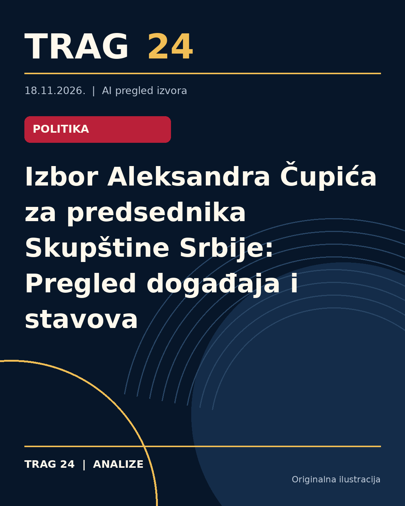

Izbor Aleksandra Čupića za predsednika Skupštine Srbije: Pregled događaja i stavova

ŠTA SE DOGODILO
Aleksandar Čupić, kandidat Studentske liste, izabran je za predsednika Narodne skupštine Srbije. Tokom konstitutivne sednice, njegova kandidatura je dobila podršku različitih poslaničkih grupa, uključujući Savez vojvođanskih Mađara (SVM) i Stranku pravde i pomirenja. Ovo je prvi put u proteklih 14 godina da mandat u Skupštini ima novu većinu nakon što je Studentska lista osvojila većinu poslaničkih mandata na izborima održanim 25. oktobra.
HRONOLOGIJA
Posle potvrđivanja mandata i polaganja zakletve poslanika, otvorena je rasprava o kandidatima za predsednika parlamenta. Sanja Belić iz Studentske liste je obrazložila predlog Aleksandra Čupića ističući njegov rad sa mladima i napore da se zaštite prava dece. Na istoj sednici, Balint Pastor iz SVM-a najavio je podršku kandidatu Studentske liste, pozivajući na dijalog o većim pravima za nacionalne manjine. Željko Hubač, takođe iz Studentske liste, naglasio je važnost kulture dijaloga u Skupštini, dok su članovi opozicionih stranaka ukazali na napetosti tokom rasprava.
ŠTA NAVODE IZVORI
Poslanica Sanja Belić navodi da Čupić svojom pozicijom može unaprediti pristojnost i argumentovanu raspravu u parlamentu i intenzivnije se posvetiti pravima dece kroz vođstvo Odbora za pravo deteta. Balint Pastor iz SVM ističe da je podrška Čupiću i politički pragmatična, budući da iza njega stoji parlamentarna većina, te poziva na izmene Poslovnika Skupštine kako bi nacionalne manjine mogle formirati poslaničke grupe. Izvor Insajder donosi izjave poslanika Studentske liste koji podržavaju kandidata kao profesora i borca za kulturu dijaloga, ali i kritike opozicije koje se odnose na verbalne sukobe i prethodne incidente u Skupštini.
ŠTA JE POTVRĐENO
Potvrđeno je da je Aleksandar Čupić kandidat Studentske liste izabran za predsednika Skupštine. Ima podršku parlamentarne većine i pojedinih manjinskih poslaničkih klubova. Takođe potvrđeno je da je aktuelni saziv Skupštine prvi sa novom većinom posle 14 godina i da je temeljni cilj promovisanje konstruktivne rasprave i zaštita prava dece.
ŠTA NIJE POTVRĐENO
Nije potvrđeno da li će promene u Poslovniku Skupštine za manjinske predstavnike biti sprovedene posle izbora. Takođe nema zvaničnih podataka o tome kako će buduća Skupština rešavati eventualne tenzije i napetosti između različitih političkih aktera. Nije potvrđeno ni kako će se konkretno odvijati budući rad Odbora za pravo deteta pod predsedavanjem Čupića.
ŠTA OSTАJE OTVORENO: Ostaje da se vidi na koji način će Čupić kao predsednik parlamenta uspeti da uvede kulturu dijaloga i odgovornog odnosa prema građanima. Otvoreno je pitanje dalje inkluzije i prava nacionalnih manjina, posebno u delu formiranja poslaničkih grupa i zastupljenosti u potpredsedničkim telima. Takođe, ostaje da se prati da li će skupštinska većina i opozicija uspevati da prevaziđu trenutne sukobe i kako će se novo vođstvo parlamenta izboriti sa izazovima zaštite prava dece i unapređenja institucija.
Izvori
- https://www.blic.rs/vesti/politika/poslanica-studentske-liste-sanja-belic-objasnila-predlog-cupica-za-predsednika/n6mjneb
- https://n1info.rs/vesti/pastor-svm-ce-glasati-za-kandidata-studentske-liste-za-predsednika-skupstine/
- https://insajder.net/prenosimo/blog-uzivo-drugi-dan-konstitutivne-sednice-skupstine-nastavlja-se-rasprava-o-kandidatima-za-predsednika-parlamenta
Ova analiza je pripremljena uz pomoć veštačke inteligencije na osnovu javno dostupnih izvora. Navodi izvora nisu nužno nezavisno potvrđeni.